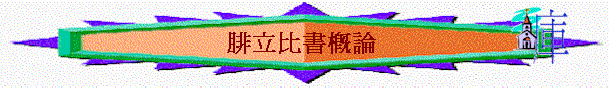

A.作者：保羅
B.時間：保羅第一次被囚(62-63A.D.)
C.對象：腓立比教會
D.背景
1.有理想組織架構的教會(1:1)
〜有監督、有執事
2.要面對艱難痛苦的教會(1:29-30)
3.有內部分裂危機的教會
〜有兩女會友不同心
4.在恩典中有成長的教會
5.同心合意傳福音的教會
6.歐洲第一間建立的教會
〜打開了福音傳至歐洲的通道
〜也是軍事城，在歐洲主要通道，有利傳福音至外邦
7.有異教入侵危機的教會(3:2)
〜特別是猶太教
E.寫作目的
1.叫他們不擔心牧者被捆綁
2.叫他們繼續放膽興旺福音，即使要面對苦難
3.要他們接待忠心勞苦的以巴弗提
4.要防備猶太教犬類，避免追求肉體無益的事
5.勸教會兩位姊妹同心
6.鼓勵他們即使要受苦，但仍可靠主經過
F.主題：活著就是基督
「因我活著就是基督，我死了就有益處。」1:21
G.大網
引言(1:1-2)
1.同心合意興旺福音(顯大基督)1-2
a.過去的欣賞1:3-11
b.神僕的榜樣1:12-20
c.牧者的心願1:21-30
d.實際的方法2:1-18
e.雲彩的見証2:19-30
2.竭力追求得著基督(追求基督)
3
a.過往的追求3:1-6
b.現今的改變3:7-12
c.仍有的心志3:13-16
d.一同的效法3:17-21
3.任遭何事靠主得力(倚靠基靠)
4
a.靠主站穩4:1
b.靠主同心4:2-3
c.靠主喜樂4:4-7
d.靠主得力4:8-20
結語4:21-23
|
活
著 就 是 基 督 |
||
|
顯
大 基 督 |
追
求 基 督 |
倚
靠 基 督 |
|
1-2 |
3 |
4 |
附註:
（一）腓立比城的背景
1) 位置：愛琴海西岸馬其頓的小城，馬其頓這一方的頭一個城（徒16：12），歐亞兩洲主要通道
2) 名字：「腓立比」－－亞歷山大的父親腓力給起名；別名：特圖（Datos），格蘭乃（Kreniles）井/泉意思
3) 政治：羅馬帝國殖民地，政治，習俗，軍事都依從羅馬制度，人民也有很強的羅馬公民意識（徒16：20-21；35-39）
4) 人民：意大利人佔多（多是退伍軍人和羅馬士兵），很少猶太人
5) 言語：法定語----拉丁文，平日用語則希臘文佔多
6) 用途：軍事城，羅馬兵用駐房城（徒16：2）可能由於是位於歐亞兩洲主要通道，附近有一連串山脈，但腓立比城近陡峭下降，有利於軍事用途之故
7) 宗教：據近代考古學研究，城中多廟宇遺蹟，足證明當時人民熱心崇拜多神，但卻少猶太教會堂，只在城外靠近河邊有一個禱告的地方
（二）腓立比教會建立經過
從使徒行傳16：6-40看到，保羅在A.D.52年第二次宣教旅程中，被聖靈引到腓立比開展工作，當時一開始之先，有以下一班人初聞福音信主，成為初期腓立比教會之最先信徒：
1) 推雅推喇城婦女聽保羅話後信主
2) 被污鬼附身的一個婦人，給保羅遇見，後污鬼被趕出，她和河邊一些人一同信主
3) 保羅被囚時，獄中地震，管理監牢的禁卒信主
保羅走後，他們這班初信主的人，合力發展聖工，加上可能路加繼續留在腓立比工作（徒16：10-17），教會就漸形成
（三）腓立比教會的特徵（跟據腓立比書描述）
1) 教會發展已有完善組織----已有監督執事（1:1）
2) 正遭逼迫
3) 內部有分裂危機----兩女會友不同心
4) 在恩典中長大----所以保羅為腓立比教會充滿喜樂和讚美（1:6；4:1；4:18）
5) 11徒同心與福音(1:5)
6)
是歐洲第一間教會
（四）與保羅日後的關係
從以下兩大原因，可看到保羅與腓立比關係十分親密與良好：
1) 在腓立比教會方面：保羅離開後，他們仍關心保羅，支持保羅，許多次把供物送給保羅，【保羅往帖撒羅尼迦，羅其頓，在獄中被捆鎖，他們也托人送物給保羅（徒4:16;4:15;4:18）】；另一方面，當保羅在獄中時，他們思念他的心更顯激發（4:10）
2) 在保羅方面：從信中他描述腓立比教會門徒的字眼，如「我所親愛的」，「我所思念的弟兄」等，都看到他們彼此之間的關係仍十分密切的
（五）在教會歷史中的地位
1) 她是歐洲的第一間教會
2) 打開了福音傳至歐洲的通道
3) 保羅旅行佈道，建立教會背後的支持者【（參看(四)）】
4) 曾捐助耶路撒冷的教會（林後8:1-5）
5) 半個世紀後也，曾照顧在羅馬受刑的安提阿主教伊格那丟
雖然今日腓立比教會，地方已成頹垣敗瓦，但過去她在教會歷史中，曾幫過（用金錢 / 物件）不少教會及主的僕人，也揭開歐洲福音化的新一頁了。
參考資料
/ 書目
一) 巴斯德原著，吳主光譯：聖經研究；香港：種籽出版社；1992
二) 中國神學研究院：串珠----註釋本；
中國神學研究院；1989
三) 馮蔭坤：腓立比註釋；天道，1987
四) 陳終道：腓立比歌羅西腓利門書；校園，1992